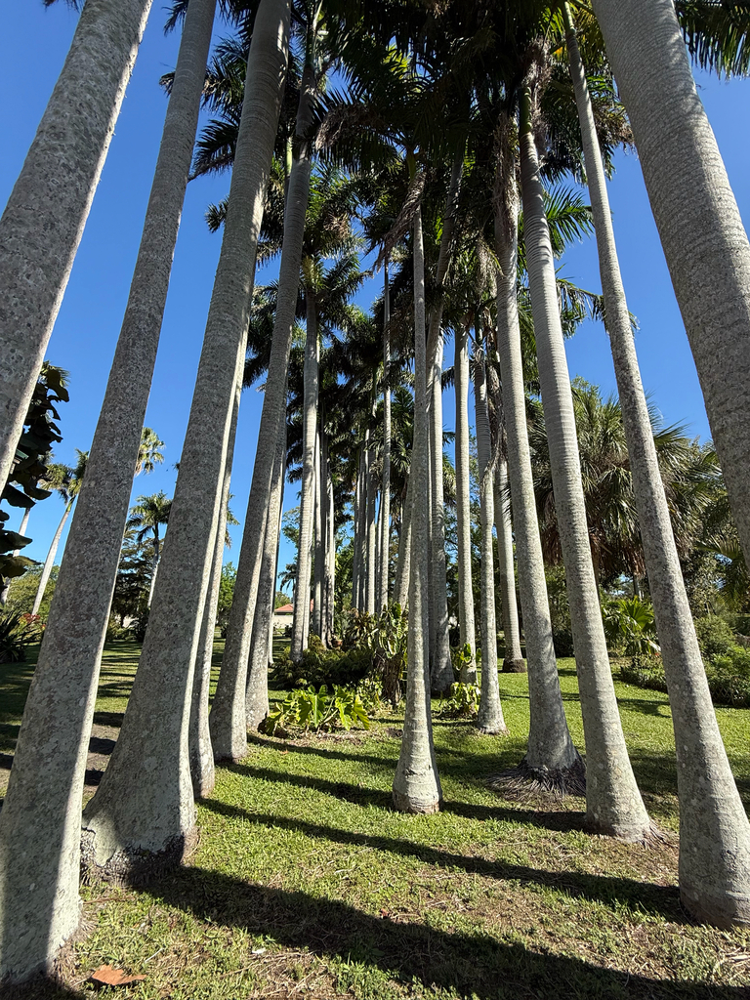

- Explodes into bloom with thick, powdery clouds of white pollen that look exactly like a winter snowstorm swirling through the tropical garden.
- A rare botanical mystery; it pulls nitrogen straight from the air to naturally fertilize the soil beneath it without traditional root nodules.
- The smooth, emerald-green upper collar is not a trunk. It is a crownshaft of tightly wrapped leaf bases that falls off when the palm self-cleans.
- Standing as Cuba's national tree and Miami-Dade’s official symbol, this iconic silhouette naturally grows only in Florida's extreme southern tip.
Native to Mexico, the Caribbean, Florida, and parts of Central America. In Florida naturally found in moist rich hammocks of extreme South Florida. The genus is named for Roy Stone, a US Army general. Also the national tree of Cuba where it is a culturally significant symbol. One of the most majestic palms in the world.
- The Iconic Tropical Silhouette The Royal Palm is the definitive living symbol of Florida’s tropical identity and serves as Cuba's proud national tree [1]. During the 19th century, it was planted extensively to frame the grand boulevards of Havana [1].
- Its designation as Miami-Dade County’s official tree is well-earned; no other plant defines a tropical horizon from a distance quite like a uniform row of mature Royal Palms [1].
- Because wild populations in Florida are naturally restricted to the sub-tropical hammocks of Collier, Miami-Dade, and Monroe counties, this park’s specimen thrives as a striking geographic traveler planted north of its native range.
- Botanical Mystery & Summer Snows Beyond its stately architecture, the Royal Palm possesses fascinating biological traits.
- When it enters its blooming cycle, the tree releases powdery white pollen in such extreme, massive quantities that the falling particles genuinely resemble a localized winter snowstorm—a striking spectacle documented to stop visitors in their tracks at the historic Fairchild Tropical Botanic Garden.
- Furthermore, it stands as a major botanical anomaly: it is one of the very few non-legumes verified to fix atmospheric nitrogen. While it lacks the traditional root nodule bacteria found in the pea and bean family, it successfully extracts nitrogen from the air to enrich the surrounding soil, though the exact cellular mechanism remains a subject of ongoing scientific study.
- Self-Cleaning Crownshaft Visitors often mistake the vibrant green column directly beneath the fronds for part of the structural trunk. In reality, this is a crownshaft, formed entirely by the massive, tightly overlapping sheathing bases of the leaves [1].
- As the palm grows, it naturally self-cleans; the oldest frond dies, pulls away, and drops the corresponding green sleeve to the ground, cleanly exposing the smooth, concrete-like, gray-white cylinder of the true trunk below [1].
The Royal Palm produces enormous quantities of small dark-red to black fruits that are critically important to White-crowned Pigeons — a species that depends heavily on tropical fruit and specifically seeks Royal Palm groves. Parrots, grackles, raccoons, and squirrels also take the fruit.
When the tree blooms, the pollen release can be so heavy it resembles falling snow — creating a brief but intense resource for bees and pollinating insects. The self-cleaning frond drops provide ground-level material that shelters invertebrates. As one of the few non-legumes that fixes nitrogen into the soil, it also improves the growing conditions of surrounding plants.
fronds drop cleanly on their own at a rate of about one per month. The falling fronds are 10 to 15 feet long and can weigh up to 50 pounds — plant away from buildings and pedestrian paths.
Tiny white flowers in showy hanging sprays up to 2 feet long, emerging just below the crownshaft. Pollen release can be so heavy it resembles falling snow. Followed by large clusters of fruit.
Small, dark red to black. Consumed by White-crowned Pigeons, parrots, raccoons, and other wildlife. Handle fruit with rubber gloves — pulp contains calcium oxalate crystals that irritate skin.
Smooth, light gray-white, up to 2 feet in diameter. Ringed with evenly-spaced leaf scars.
The smooth green column at the top of the trunk, formed by overlapping leaf bases — not part of the trunk itself.
The crownshaft color and smoothness distinguish this from other large palms. Look for the transition line between the gray trunk and the green crownshaft. In fruit, watch the base of the crownshaft for the heavy pendulous fruit clusters. Check for White-crowned Pigeon activity during fruiting season.
Handle the fruit with gloves — the pulp contains calcium oxalate crystals that significantly irritate skin and mucous membranes. It isn't a human food plant.
Incidental contact with intact fruit isn't toxic, but avoid handling the pulp bare-handed.
For pets, keep dogs from chewing fallen fruit, which holds the same irritant crystals.
- © jsea (CC-BY-NC), via iNaturalist